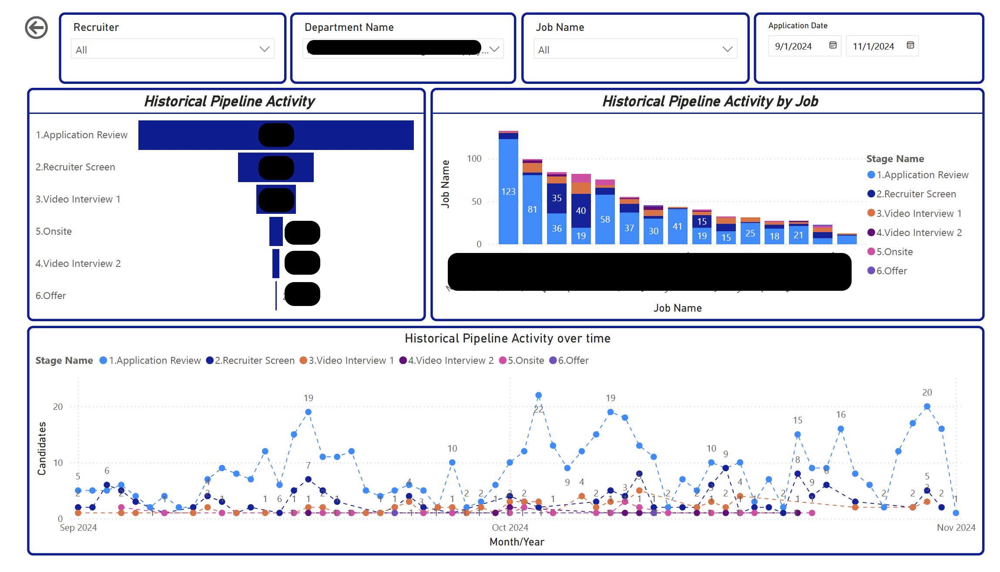
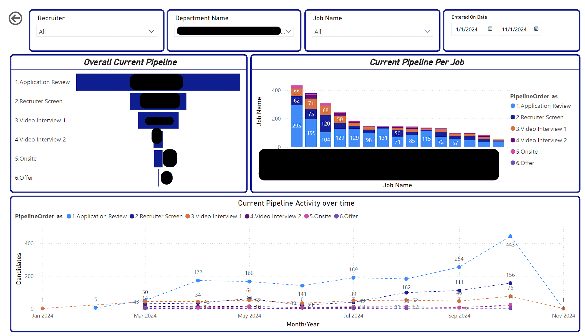
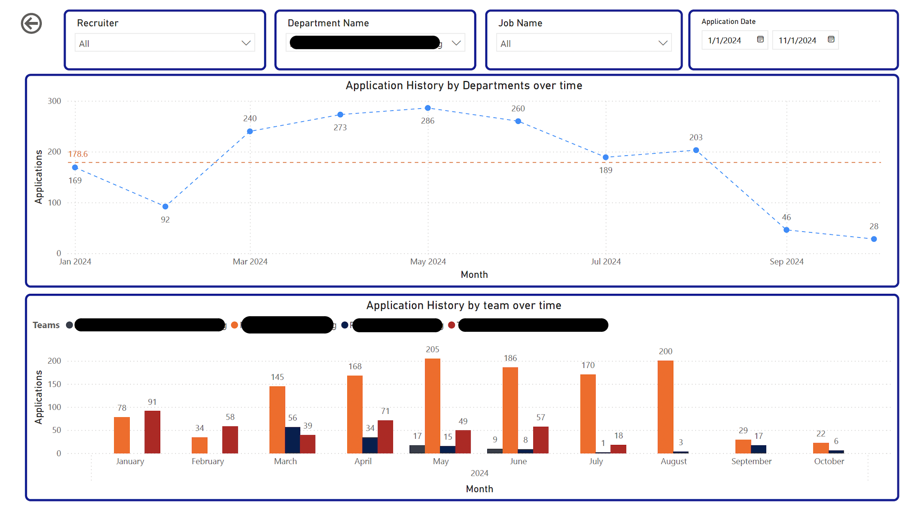
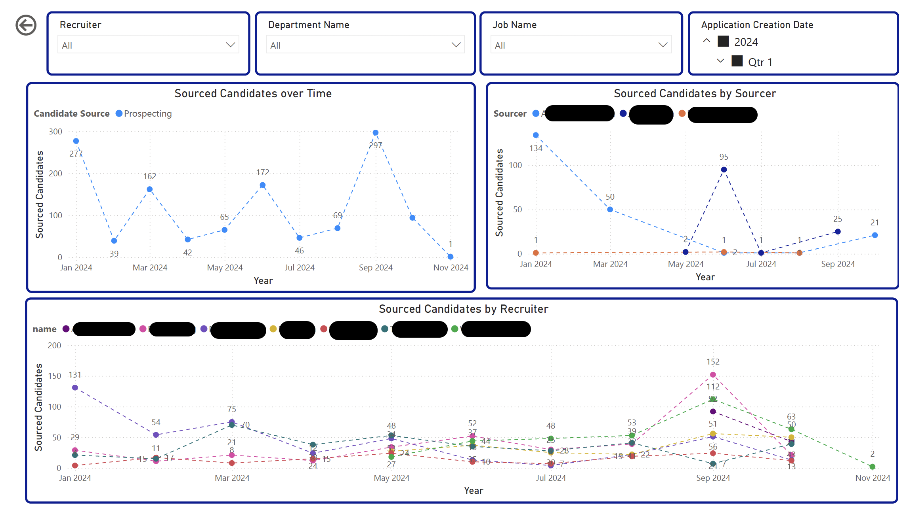
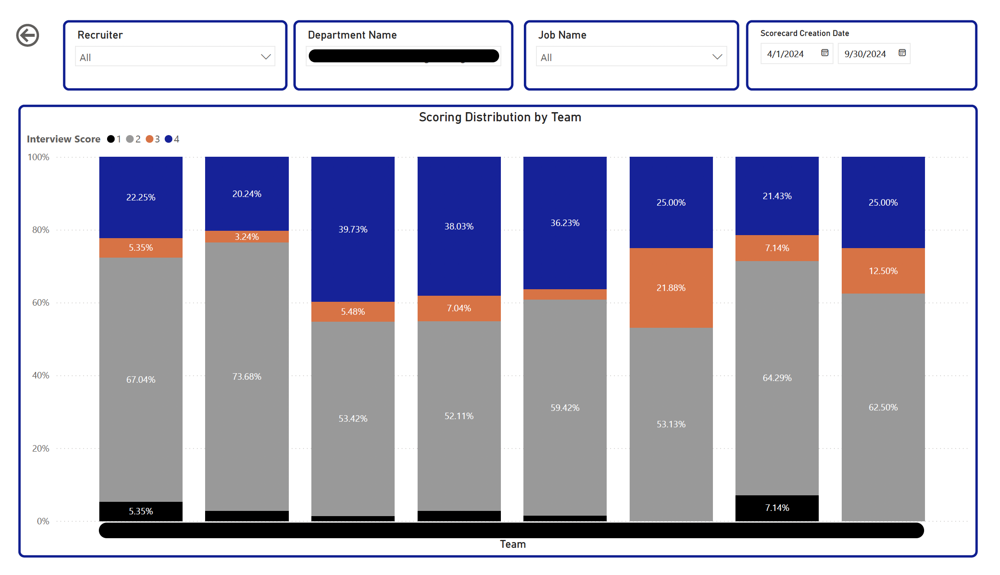
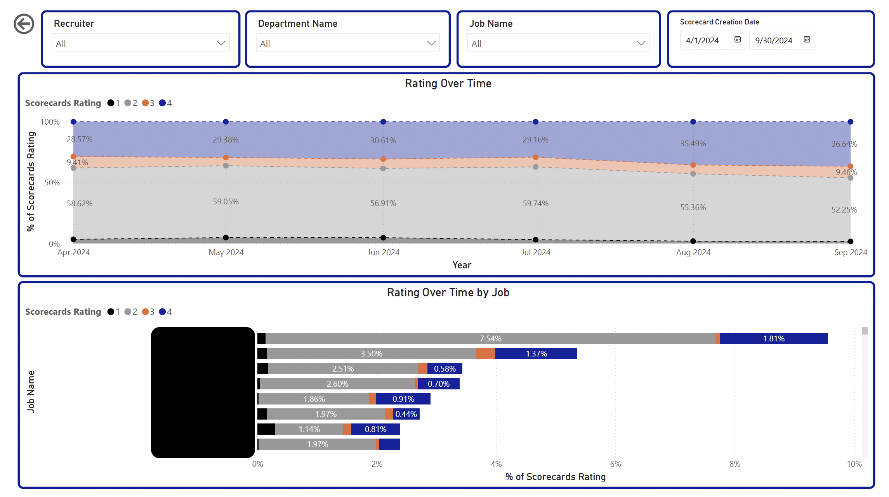
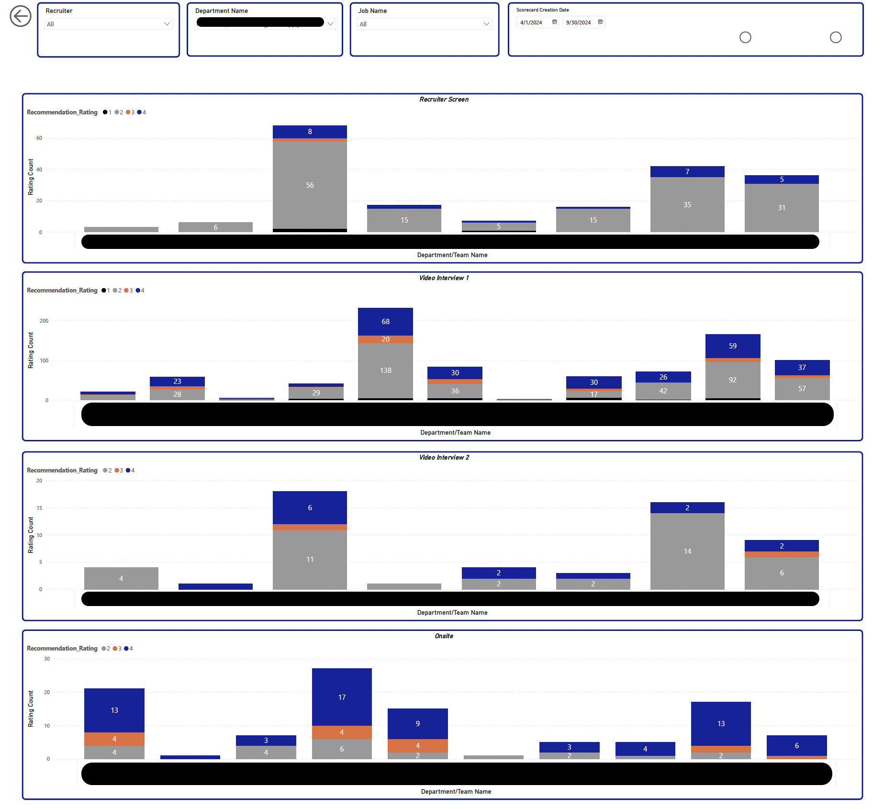
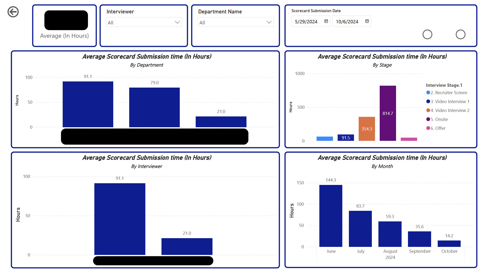
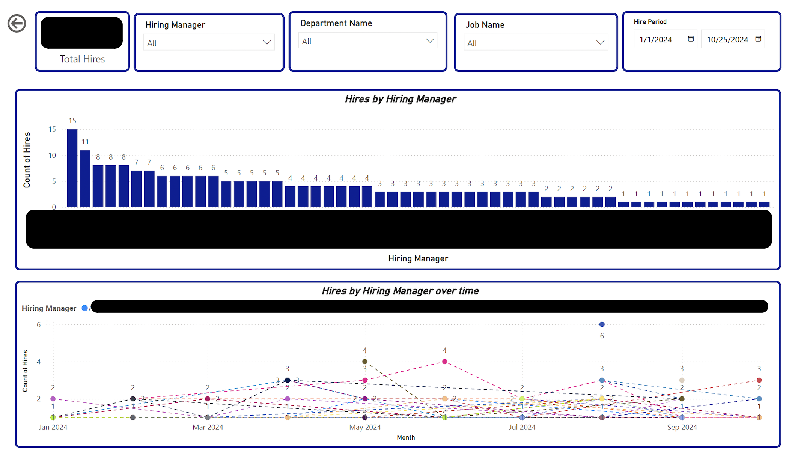
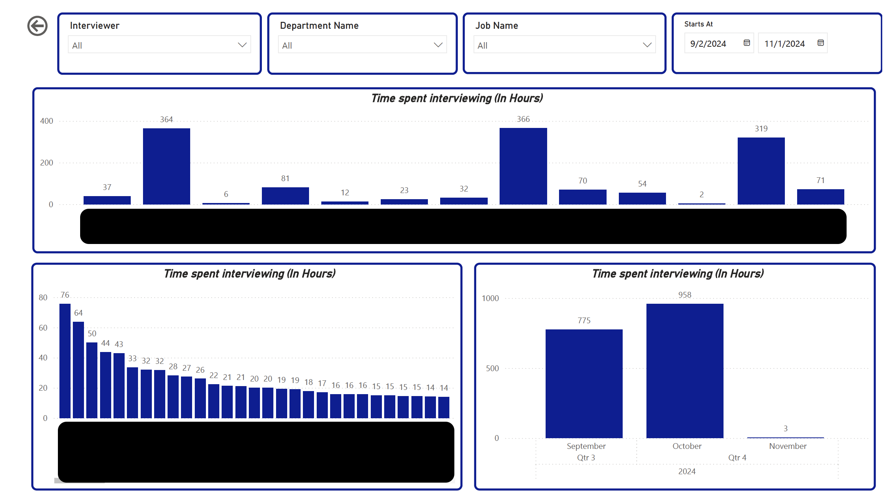

Recruitment Dashboard
This comprehensive analysis underscores the importance of ongoing evaluation and adaptation within the recruitment pipeline. By leveraging historical and current data, organizations can identify opportunities for improvement, ensure alignment with departmental needs, and optimize the candidate experience. Continuous monitoring of these metrics will be crucial in driving successful hiring outcomes and sustaining competitive advantage in attracting top talent.
Historical Pipeline Activity
Overview by Stage and Job The historical pipeline activity reveals a structured approach to the recruitment process, encompassing key stages: Application Review, Recruiter Screen, Video Interview 1, Video Interview 2, and Offer. Over time, data shows a consistent flow of candidates through these stages, although certain bottlenecks emerged, particularly during the Video Interview stages. This indicates a potential need for more efficient scheduling or interviewer availability.
When analyzed by job, distinct trends arise. Certain roles exhibit higher attrition rates during the Recruiter Screen and Video Interview 1 stages, suggesting that candidate qualifications may not align with job expectations or that specific roles face heightened competition. Conversely, jobs with lower attrition rates during these stages tend to see a more robust conversion to offers, indicating effective recruiting strategies or a stronger brand presence in the labor market.
Temporal Analysis Tracking historical pipeline activity over time reveals fluctuations in candidate engagement and pipeline health, particularly noticeable by month. Periods of increased hiring activity correlate with seasonal trends, showcasing a spike in applications during specific months. However, the analysis also identifies downturns in applicant activity during off-peak periods, highlighting opportunities for strategic outreach and marketing efforts to sustain candidate interest throughout the year.

Current Pipeline Activity
Stage and Job Analysis Current pipeline activity mirrors historical trends but also reflects adjustments based on past experiences. The current stage breakdown remains consistent, with a notable increase in the number of candidates moving into the Video Interview stages compared to historical data. This improvement may suggest enhanced pre-screening processes, allowing for better candidate fit earlier in the pipeline.
Job-specific analysis indicates ongoing challenges with certain roles, where the transition from Video Interview 1 to Video Interview 2 remains a critical drop-off point. Recruiters are encouraged to evaluate feedback from these stages to pinpoint issues related to candidate experience or interview quality.
Temporal Overview Current pipeline activity monitored monthly indicates a steady influx of candidates, with slight variances from the historical data. The recruitment team has implemented new strategies that appear to positively affect candidate movement through the stages, particularly during peak hiring months. Ongoing tracking will be essential to sustain and refine these practices.

Application History
Departmental and Team Insights Application history demonstrates a nuanced understanding of departmental needs and team dynamics. Analysis reveals variances in application rates across departments, with some teams experiencing a surge in interest, while others show stagnation. Understanding these dynamics allows for targeted recruitment efforts to engage potential candidates in underperforming areas.

Candidate Sourcing
Recruiter and Sourcer Performance Evaluating sourced candidates over time reveals the effectiveness of individual recruiters and sourcers. Data indicates that certain recruiters consistently source candidates who progress further in the pipeline, suggesting an alignment with organizational needs or superior candidate engagement practices. This insight can drive focused training and resource allocation to maximize recruitment efficiency.

Interview Ratings

Performance Insights Interview rating analysis highlights the quality of candidate assessments over time, dissected by job and recruiting stage. Certain roles receive consistently higher ratings, indicating that interviewers are effectively evaluating candidate fit. In contrast, some positions show significant variability in ratings, which warrants further investigation into the interview process’s consistency and fairness.


Scorecard Submission Analysis
The average scorecard submission by interviewers, analyzed by department and team, reveals disparities that may impact hiring quality. Departments with higher submission rates correlate with successful hires, suggesting that thorough evaluations lead to better hiring outcomes. Encouraging consistent scorecard submissions can improve overall recruitment efficacy.

Hiring Metrics
Hires by Hiring Manager Tracking hires by hiring manager over time uncovers trends that reveal the effectiveness of individual managers in selecting candidates. Managers with a high rate of successful hires often possess well-defined expectations and engaging candidate experiences. Identifying these traits can facilitate knowledge sharing and best practices across the organization.

Time Spent Interviewing
Resource Allocation Insights Lastly, the analysis of time spent interviewing by recruiter and department provides insights into resource allocation and operational efficiency. Some recruiters spend considerably more time interviewing, which could indicate a thorough vetting process or inefficiencies that might necessitate a reevaluation of interview strategies. Departments showing higher time investment should be analyzed for potential process improvements to enhance candidate experience and recruiter productivity.
